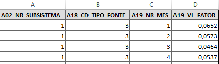
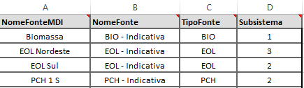
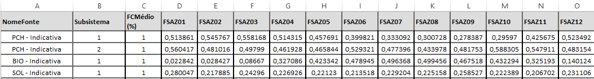
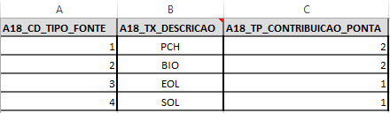
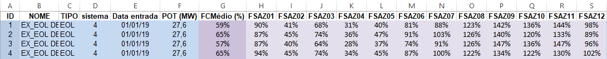

• Ferramenta desenvolvida em linguagem R versão 3.6.
• Interface desenvolvida com Shiny. Este é um pacote R que facilita a criação de aplicações Web diretamente do R e utiliza CSS, widgets, html e ações JavaScript para maior flexibilidade.
• Usa o pacote clpAPI: Interface R para a API em C do COIN-OR Clp.
• A ferramenta cria uma estrutura de dados usando SQLite onde todos as informações são armazenadas. Mais informações em: sobre a base.
• Possuir ou executar um caso que tenha gerado saídas nwlistop de geração hidro total e energia armazenada final em percentual da máxima (ghtot e earmfp), de acordo com o tipo de simulação desejada - série histórica ou sintética (shist/sssint). Garantir o formato indicado pois os arquivos com sufixo "m" são de submercado e são necessários os de REEs.
• O balanço de ponta identifica automaticamente o tipo de simulação através do arquivo de dados gerais (dger.xxx) do NEWAVE. Portanto, deve-se garantir que o campo "TIPO SIMUL. FINAL" do arquivo deve estar preenchido corretamente (1: série sintética; 2: série histórica).
• A pasta onde se localiza o caso deve conter o arquivo relatório de saída da simulação completa (relat, replaca ou pmo.dat). Esses arquivos não podem ser da simulasimulação final.
• O arquivo exph não pode conter TABs. Caso contrário dever haver problemas de leitura.
• A informação de Mercado deve conter todos os subsistemas (mesmo que com valor zerado)
• Arquivo dadosOFR.xlsx: Possui as contribuições das renováveis não despachadas para a ponta. O arquivo possui quatro abas: FatorPonta, RelacaoIndicativas, SazonalidadeIndicativas e TipoContribuicaoPonta. Este arquivo deve estar presente na mesma pasta dos arquivos do caso.
• FatorPonta: Nessa aba ficam os fatores de contribuição mensal informados em função da potência instalada da fonte (tipo 1).

• RelacaoIndicativas: Nessa aba ficam os dados de "de para" referentes ao cabeçalho do arquivo saidaExpansao.txt, oriundo do MDI. O campo TipoFonte deve seguir o formato do MDI.

• SazonalidadeIndicativas: Nessa aba ficam os dados de sazonalidade das fontes indicativas da expansão.

• TipoContribuicaoPonta: Nessa aba ficam as indicações do tipo de contribuição de ponta. A disponibilidade de potência pode ser considerada como sendo o valor méio mensal da sua geração (tipo 2), ou uma contribuição mensal informada em função da potência instalada (tipo 1). Para os casos do tipo 1, a tabela BPO_A19_FATOR_PONTA_OFR deve ser preenchida. Para tal, a informação deve ser incluída na aba FatorPonta. Para os casos do tipo 2, as informações ficam no arquivo excel GeraPeq. O campo A18_TX_DESCRICAO deve seguir o mesmo formato do do campo TipoFonte, e consequentemetne, do MDI

• Arquivo GeraPeq: Planilha excel contendo a geração sazonalizada das fontes não simuladas (pequenas). Os dados devem estar na aba de nome "Principal". Este arquivo deve estar presente na mesma pasta dos arquivos do caso.

• Arquivo saidaExpansao.txt: Arquivo texto com a expansão do MDI. Este arquivo deve estar presente na mesma pasta dos arquivos do caso.